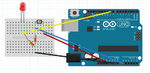
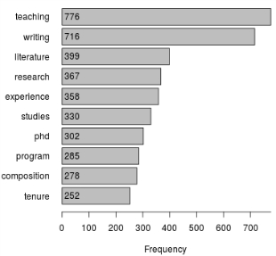

“Looking in the Dustbin: Data Janitorial Work, Statistical Reasoning, and Information Rhetorics.” Computers and Composition Online. Fall 2015. http://cconlinejournal.org/fall15/beveridge/
“Attention Ecology: Trend Circulation and the Virality Threshold.” Co-authored with Nicholas Van Horn and Sean Morey. Digital Humanities Quarterly. Fall 2016. http://www.digitalhumanities.org/dhq/vol/10/4/000271/000271.html
“Circulation Analytics: Research Software Development and Social Network Data.” Circulation, Rhetoric, and Writing. Eds. Collin Gifford Brooke and Laurie E. Gries. Utah State University Press. Forthcoming 2017.
Doing Visual Studies. Co-edited with Laurie Gries. First author: Gries. Chapters accepted, editing in progress.
Big Data and the Humanities. Co-authored with Sidney Dobrin. Under review.
Just as critical making forms the productive nexus for my own activities as a scholar, so too does this praxis inspire the courses I teach. I approach the classroom as a collaborative space, where rhetorical analysis and media ecology inform project-oriented student learning. Whether working with first year undergraduates or with advanced graduate students, treating the classroom as a productive maker-space provides an immediate applicability for the theories, analyses, and critical reflections that inform student engagement and learning.
I am the co-creator of MassMine. MassMine recieved the largest Level II Startup Grant available from the NEH in 2015. MassMine collects and curates data from social networks for academic research. MassMine's data sources: Twitter, Google Trends, Tumblr, Wikipedia, and any URL. www.massmine.org
I co-developed an Arduino programming and prototyping training series for the Marston Science Library at the University of Florida. The training series is open to all students and provides a basic introduction to making and physical computing with Arduinos. The LibGuides for the training are available here.
I am one of the founding members of the Trace Innovation Initiative at the University of Florida. The Trace lab works to combine digital humanities methods with theories from critical making, media ecology, and digital rhetoric to produce new technologies and new forms of scholarship that challenge long-standing approaches to innovation and invention in the humanities. In addition to projects like MassMine, Trace supports work in augmented and virtual reality, 3D scanning and printing, application development and web design, and innovative approaches to academic publishing. trace.english.ufl.edu
Inspired by Jim Ridolfo’s work with rhetmap.org, I am curating an archive of job description data and writing studies related analyses from the Modern Language Association Jobs Information List. I am analyzing the data for changes in relative year-to-year word frequencies and correlations related to the terms: “rhetoric,” “composition,” “writing,” and “technical.” All of the data and code are available through my GitHub page. The dataset will contain 10 years of job posting data and analyses once completed. Target goal for completion of analysis: Spring 2017.
I am a PhD candidate at the University of Florida, and I will complete my PhD in May of 2017. My research focuses on the use of data science tools and methods to study digital rhetoric and networked writing. My research and teaching interests also include visual rhetoric, technical writing, the rhetoric of science, and maker culture.